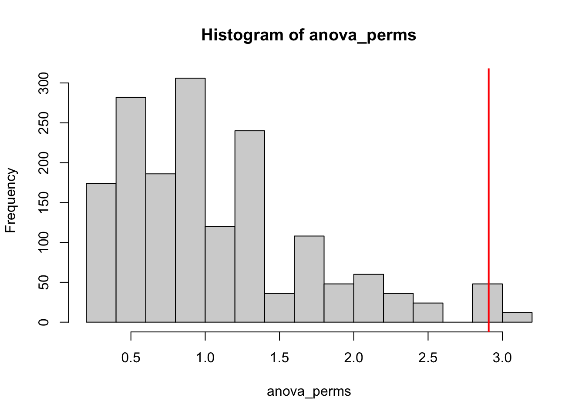
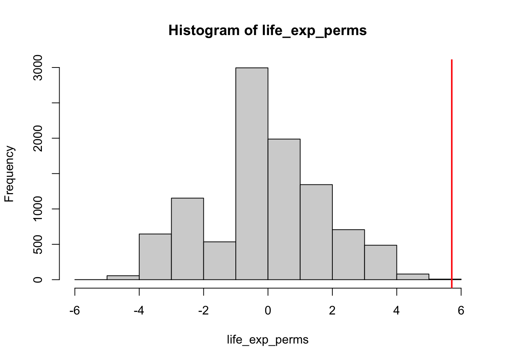
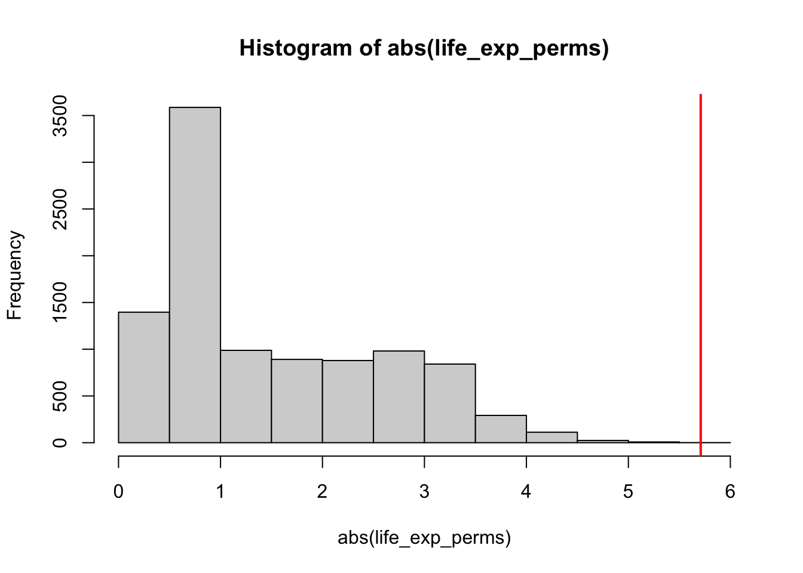

Permutations (R)
Red means that the page does not exist yet
Gray means that the page doesn’t yet have separation of different levels of understanding
Orange means that the page is started
In this website you can choose to expand or shrink the page to match the level of understanding you want.
- If you do not expand any (green) subsections then you will only see the most superficial level of description about the statistics. If you expand the green subsections you will get details that are required to complete the tests, but perhaps not all the explanations for why the statistics work.
- If you expand the blue subsections you will also see some explanations that will give you a more complete understanding. If you are completing MSc-level statistics you would be expected to understand all the blue subsections.
- Red subsections will go deeper than what is expected at MSc level, such as testing higher level concepts.
Permutation analysis
Simple comparisons between 2 conditions
We have used the word permutation before in calculating probabilities and Fisher’s exact score within contingency, in that it refers to a specific combination of items. In the context of permutation analysis, you compare the original permutation of items within categories and a range of other permutations of items within categories. For example, let’s imagine we want to see if cats are slower at running than dogs. We could measure the amount of time it took (in seconds) for cats and dogs to run 100 meters (assuming you are able to herd cats). We might get some data as follows:
cat_dog_df <- data.frame(
animal = c("cat","cat","cat","dog","dog","dog"),
time = c(20,9,9,5,6,7)
)
rmarkdown::paged_table(cat_dog_df)To compare between these groups we would like to do a t-test, but would only be able to do this if the data is parametric. Let’s check whether there’s any problem with this assumption by using a Shapiro-Wilk test for dogs and cats:
shapiro.test(cat_dog_df$time[cat_dog_df$animal=="cat"])
Shapiro-Wilk normality test
data: cat_dog_df$time[cat_dog_df$animal == "cat"]
W = 0.75, p-value < 2.2e-16shapiro.test(cat_dog_df$time[cat_dog_df$animal=="dog"])
Shapiro-Wilk normality test
data: cat_dog_df$time[cat_dog_df$animal == "dog"]
W = 1, p-value = 1For cats there is a significant problem. As t-tests are dependent on the distributions of each group being parametric, we will use permutation analysis as a non-parametric solution. First, we want to capture how big the difference in means is, so that we can compare it to permutations we will describe later:
mean_diff = mean(cat_dog_df$time[cat_dog_df$animal=="cat"]) - mean(cat_dog_df$time[cat_dog_df$animal=="dog"])
mean_diff[1] 6.666667So cats are \(6.\overline{6}\) seconds slower than dogs on average. To capture how significant this difference is, we can create a distribution of possible differences that could have happened if we consider all permutations of data points being allocated to dogs and cats. Don’t woryr if this isn’t clear yet, the next steps should clarify the principle.
We currently have participants 1 to 3 as cats, and participants 4 to 6 as dogs. We need to identify all permutations participants 1 to 6 could have had as cats and dogs, and see how big the mean difference between cats and dogs would have been in each permutation.
# all permutations of participant numbers for cats, with each permutation as a column
cat_perms = combn(6, 3)
# permutation 1 as an example (this is the original permutation)
cat_perms[,1][1] 1 2 3# permutation 2 as an example (participants 1, 2 and 4s data is "cat" in this permutation)
cat_perms[,2][1] 1 2 4#preparing vector to store the mean
mean_diff_perms = numeric(dim(cat_perms)[2])
# loop through all permutations
for(i in 1:ncol(cat_perms)){
# select the relevant permutation
these_cats = cat_perms[,i]
# allocate the data points for these_cats to cats
cats_rt = cat_dog_df$time[these_cats]
# identify dogs
dogs_index = !(1:6 %in% these_cats)
dogs_rt = cat_dog_df$time[dogs_index]
# store mean difference
mean_diff_perms[i] = mean(cats_rt) - mean(dogs_rt)
}
# order the means from each permutation from most negative to most positive
sort(mean_diff_perms) [1] -6.666667 -5.333333 -5.333333 -4.666667 -4.666667 -4.000000 -4.000000
[8] -3.333333 -2.666667 -2.000000 2.000000 2.666667 3.333333 4.000000
[15] 4.000000 4.666667 4.666667 5.333333 5.333333 6.666667We now have the mean difference from every possible permutation, we have a distribution of all possible outcomes. The question now becomes, was the outcome from the original data (or a more extreme outcome) unusually unlikely? Well, the original outcome was that cats were \(6.\overline{6}\) seconds slower than dogs. Out of all the possible outcomes, there are only 2 that have that size of absolute difference or bigger (but in this case there aren’t any bigger absolute differences). The likelihood of getting this size of difference then is 2 out of all permutations, which is 20, i.e. \(\frac{2}{20} = \frac{1}{10} = .1\) . So this wouldn’t be significant evidence. Note that if we had had a 1-tailed hypothesis that cats would be slower (or that dogs would be faster), then we wouldn’t have compared \(6.\overline{6}\) to the absolute values of all outcomes, and so we would have found only a 1 in 20 chance of getting our outcome. You could summarise this in a table if it helps:
library(knitr)
library(kableExtra)
library(tidyverse)── Attaching core tidyverse packages ──────────────────────── tidyverse 2.0.0 ──
✔ dplyr 1.1.3 ✔ readr 2.1.4
✔ forcats 1.0.0 ✔ stringr 1.5.0
✔ ggplot2 3.4.4 ✔ tibble 3.2.1
✔ lubridate 1.9.3 ✔ tidyr 1.3.0
✔ purrr 1.0.2
── Conflicts ────────────────────────────────────────── tidyverse_conflicts() ──
✖ dplyr::filter() masks stats::filter()
✖ dplyr::group_rows() masks kableExtra::group_rows()
✖ dplyr::lag() masks stats::lag()
ℹ Use the conflicted package (<http://conflicted.r-lib.org/>) to force all conflicts to become errorsdata.frame(
"permutation difference" = sort(mean_diff_perms),
"permutation absolute difference" = abs(sort(mean_diff_perms)),
"original_difference" = mean_diff,
"1 tailed" = ifelse((sort(mean_diff_perms))<mean_diff,"lower","equal to or higher"),
"2 tailed" = ifelse(abs(sort(mean_diff_perms))<mean_diff,"lower","equal to or higher"),
check.names = F
) %>%
mutate_all(~cell_spec(.x, color = ifelse(.x == "equal to or higher", "red"," black"))) %>%
kable(escape = F) %>%
kable_styling()| permutation difference | permutation absolute difference | original_difference | 1 tailed | 2 tailed |
|---|---|---|---|---|
| -6.66666666666667 | 6.66666666666667 | 6.66666666666667 | lower | equal to or higher |
| -5.33333333333333 | 5.33333333333333 | 6.66666666666667 | lower | lower |
| -5.33333333333333 | 5.33333333333333 | 6.66666666666667 | lower | lower |
| -4.66666666666667 | 4.66666666666667 | 6.66666666666667 | lower | lower |
| -4.66666666666667 | 4.66666666666667 | 6.66666666666667 | lower | lower |
| -4 | 4 | 6.66666666666667 | lower | lower |
| -4 | 4 | 6.66666666666667 | lower | lower |
| -3.33333333333333 | 3.33333333333333 | 6.66666666666667 | lower | lower |
| -2.66666666666667 | 2.66666666666667 | 6.66666666666667 | lower | lower |
| -2 | 2 | 6.66666666666667 | lower | lower |
| 2 | 2 | 6.66666666666667 | lower | lower |
| 2.66666666666667 | 2.66666666666667 | 6.66666666666667 | lower | lower |
| 3.33333333333333 | 3.33333333333333 | 6.66666666666667 | lower | lower |
| 4 | 4 | 6.66666666666667 | lower | lower |
| 4 | 4 | 6.66666666666667 | lower | lower |
| 4.66666666666667 | 4.66666666666667 | 6.66666666666667 | lower | lower |
| 4.66666666666667 | 4.66666666666667 | 6.66666666666667 | lower | lower |
| 5.33333333333333 | 5.33333333333333 | 6.66666666666667 | lower | lower |
| 5.33333333333333 | 5.33333333333333 | 6.66666666666667 | lower | lower |
| 6.66666666666667 | 6.66666666666667 | 6.66666666666667 | equal to or higher | equal to or higher |
The above table hopefully visualises how the original outcome only will occur 1 in 20 times, and the size of the original outcome will only occur 1 in 10 times.
Whilst we looked at mean differences above, you could also have done a t-test on each permutation to achieve the same goal:
#preparing vector to store the mean
ttest_perms = numeric(dim(cat_perms)[2])
# loop through all permutations
for(i in 1:ncol(cat_perms)){
# select the relevant permutation
these_cats = cat_perms[,i]
# allocate the data points for these_cats to cats
cats_rt = cat_dog_df$time[these_cats]
# identify dogs
dogs_index = !(1:6 %in% these_cats)
dogs_rt = cat_dog_df$time[dogs_index]
# store t-test value (note that it can also be negative to reflect direction)
ttest_perms[i] = t.test(cats_rt,dogs_rt)$statistic
}
# order the means from each permutation from most negative to most positive
sort(ttest_perms) [1] -1.7960530 -1.2649111 -1.2649111 -1.0583005 -1.0583005 -0.8751899
[7] -0.8751899 -0.7088812 -0.5547002 -0.4091966 0.4091966 0.5547002
[13] 0.7088812 0.8751899 0.8751899 1.0583005 1.0583005 1.2649111
[19] 1.2649111 1.7960530The original t-test value is 1.796 (see below)
t.test(time ~ animal, cat_dog_df, var.equal = T)
Two Sample t-test
data: time by animal
t = 1.7961, df = 4, p-value = 0.1469
alternative hypothesis: true difference in means between group cat and group dog is not equal to 0
95 percent confidence interval:
-3.639061 16.972395
sample estimates:
mean in group cat mean in group dog
12.66667 6.00000 confirming that the result is just as significant (1 in 10 for a 2-tailed hypothesis, 1 in 20 for a correct 1-tailed hypothesis) regardless of whether you use t-tests or mean difference. This is useful/important because sometimes the analysis you want to do is going to be more complicated than a single comparison (e.g. an ANOVA), and so below we’ll address this.
But first, some of you might have been concerned about whether the extreme value of 20 was being disproportionately influential. To address this, we could do an analysis that compares medians rather than means:
# original comparison
median(cat_dog_df$time[cat_dog_df$animal=="cat"]) - median(cat_dog_df$time[cat_dog_df$animal=="dog"])[1] 3#preparing vector to store the mean
median_diff_perms = numeric(dim(cat_perms)[2])
# loop through all permutations
for(i in 1:ncol(cat_perms)){
# select the relevant permutation
these_cats = cat_perms[,i]
# allocate the data points for these_cats to cats
cats_rt = cat_dog_df$time[these_cats]
# identify dogs
dogs_index = !(1:6 %in% these_cats)
dogs_rt = cat_dog_df$time[dogs_index]
# store mean difference
median_diff_perms[i] = median(cats_rt) - median(dogs_rt)
}
# order the means from each permutation from most negative to most positive
sort(median_diff_perms) [1] -3 -3 -3 -3 -2 -2 -2 -2 -2 -2 2 2 2 2 2 2 3 3 3 3We can see now that our original outcome of 3 was quite likely. If we have a 2-tailed hypothesis then the likelihood of an absolute value of 3 (or greater) is:
sum(abs(median_diff_perms) >= 3) / length(median_diff_perms)[1] 0.4# or more elegantly
mean(abs(median_diff_perms) >= 3)[1] 0.440% (p-value of .4). Even if you correctly predicted dogs would be quicker…
sum((median_diff_perms) >= 3) / length(median_diff_perms)[1] 0.2# or more elegantly
mean((median_diff_perms) >= 3)[1] 0.2you would only get a p-value of .2, which is not approaching significant.
Using permutations to compare of correlations between groups
You can use a variety of outcomes, not just comparisons of means, medians and t-values. Let’s use correlation r-values to illustrate this. Let’s imagine if we wanted to test whether height and speed were differently associated within cats and dogs. Let’s add heights (in centimeters) to our data above with dogs and cats:
cat_dog_df <- data.frame(
animal = c("cat","cat","cat","dog","dog","dog"),
time = c(20,9,9,5,6,7),
height = c(50,45,50,80,70,75)
)
rmarkdown::paged_table(cat_dog_df)First, let’s check a Pearson correlation between time and height for each animal:
# separate r-values for cats and dogs
cat_dog_df %>%
group_by(animal) %>%
summarise(r_value = cor.test(height,time)$estimate) -> cats_dogs_correlations
cats_dogs_correlations$r_value[cats_dogs_correlations$animal == "cat"]cor
0.5 cats_dogs_correlations$r_value[cats_dogs_correlations$animal == "dog"] cor
-0.5 cats_dogs_correlations$r_value[cats_dogs_correlations$animal == "cat"] -
cats_dogs_correlations$r_value[cats_dogs_correlations$animal == "dog"]cor
1 Now, we can see that there seems to be a positive correlation between height and time for cats, and a negative association for dogs. But to see if the difference between these correlations is significant lets capture all possible permutation outcomes of this comparison between correlations
#preparing vector to store the mean
corr_diff_perms = numeric(dim(cat_perms)[2])
# loop through all permutations
for(i in 1:ncol(cat_perms)){
# select the relevant permutation
these_cats = cat_perms[,i]
# allocate the data points for these_cats to cats
cats_rt = cat_dog_df$time[these_cats]
cats_height = cat_dog_df$height[these_cats]
# identify dogs
dogs_index = !(1:6 %in% these_cats)
dogs_rt = cat_dog_df$time[dogs_index]
dogs_height = cat_dog_df$height[dogs_index]
corr_diff_perms[i] = cor.test(cats_rt,cats_height)$estimate - cor.test(dogs_rt,dogs_height)$estimate
}
# order the means from each permutation from most negative to most positive
sort(corr_diff_perms) [1] -1.00000000 -0.50702194 -0.42049220 -0.38067051 -0.25959598 -0.25870207
[7] -0.17636806 -0.02508371 -0.02337287 -0.01747225 0.01747225 0.02337287
[13] 0.02508371 0.17636806 0.25870207 0.25959598 0.38067051 0.42049220
[19] 0.50702194 1.00000000As before, the difference between correlations was strongest in the comparison on the original data, and so the likelihood is 1 in 20 if you correctly expected dogs would have a more negative association between height and time than cats, and 1 in 10 if you expected there to be some difference in association of these variables between cats and dogs.
Note - we don’t need data to be non-parametric for the above to be a useful solution. This use of permutation analysis is one of a few ways to try to identify whether there’s a significant difference between two correlations. Other methods include Fisher’s Z if you are comparing between two groups of participants like above. Steiger’s Z can be used to do within-subject comparison of correlations, which is distinct from above as you are comparing correlations between 3 variables. We don’t cover Fisher’s Z and Steiger’s Z on this website, so you may want to search online for further information about them.
Comparisons between more than 2 conditions
Above we highlighted that you can compare the original t-value against each permutation’s t-value to identify whether your outcome was significantly unlikely. You can use a similar logic to use an ANOVA’s f-value as an output, using the logic above, or another complex calculation. We’ll add foxes to the above example to allow for use to do a one-way ANOVA
animal_df <- data.frame(
animal = c("cat","cat","cat","dog","dog","dog","fox","fox","fox"),
time = c(20,9,9,5,6,7,5,8,6)
)
# ANOVA on real data
anova_animals<-aov(time~animal,animal_df)
summary(anova_animals) Df Sum Sq Mean Sq F value Pr(>F)
animal 2 84.67 42.33 2.908 0.131
Residuals 6 87.33 14.56 The ANOVA was not significant, but perhaps this was a consequence of there being an unusually slow cat distorting the distribution? Let’s see if the results are still not significant when we use permutation analysis to generate F values to compare with the original F value of 2.91.
First, we need to address the fact that there are now 3 categories of animal, and so we need to calculate new permutations to reflect these 9 animals.
# see pages on probability for explanations of the following lines
# check how many unique permutations we should find with later code
unique_perms = factorial(9)/(factorial(3)*factorial(3)*factorial(3))
# generate all permutations (allowing for repetitions, despite the "repetitions = F" input)
library(RcppAlgos)
animal_combos = RcppAlgos::permuteGeneral(c("cat","cat","cat","dog","dog","dog","fox","fox","fox"),repetition = F)
# identify repetitions
combos_repeats = duplicated(paste(
animal_combos[,1],
animal_combos[,2],
animal_combos[,3],
animal_combos[,4],
animal_combos[,5],
animal_combos[,6],
animal_combos[,7],
animal_combos[,8],
animal_combos[,9]
))
# removing repetitions
animal_combos_clean = animal_combos[!combos_repeats,]We have 1680 permutations, let’s apply them to the original data to get our distribution of outcomes
#preparing vector to store the ANOVA outputs (note that the matrix has swapped to 1 row per permutation rather than 1 column)
anova_perms = numeric(dim(animal_combos_clean)[1])
# loop through all permutations
for(i in 1:length(anova_perms)){
# select the relevant permutation
animal_df$perm_animal = animal_combos_clean[i,]
# ANOVA on real data
anova_animals = aov(time~perm_animal,animal_df)
this_summary = summary(anova_animals)
anova_perms[i] = this_summary[[1]][["F value"]][1]
}
# order the means from each permutation from most negative to most positive (commented out as it's not very visibly accessible at this size)
# sort(anova_perms)
hist(anova_perms)
abline(v = 2.908, col = "red", lwd = 2)
We can see that the f-value from the original data was unusually high. The above figure also confirms how ANOVAs are 2-tailed tests, i.e. there’s no possible negative F value that’s directional. To calculate the p-value, we will compare the original F value of 2.908 with all F values generated by permutation, to see how many were equal or greater than 2.908:
mean(anova_perms>2.908)[1] 0.03571429Only .036 or 3.6% were equal to or higher than 2.908, so our p-value is .036 and is significant (less than .05).
Monte Carlo permutations
In all the above we have only had a small number of participants, so it is still manageable to identify all permutations and then apply an original output against the outputs of all permutations. However, the number of possible permutations quickly goes up with the number of participants. Let’s focus on analyses in which there are comparisons between 2 groups:
pp_perm_df <- data.frame(
participants = c(6,8,10,12,14,16,18,20)
)
pp_perm_df$pp_per_group = pp_perm_df$participants/2
pp_perm_df$permutations = NA
for(i in 1:length(pp_perm_df$participants)){
pp_perm_df$permutations[i] = dim(combn(pp_perm_df$participants[i], pp_perm_df$pp_per_group[i]))[2]
}
knitr::kable(pp_perm_df)| participants | pp_per_group | permutations |
|---|---|---|
| 6 | 3 | 20 |
| 8 | 4 | 70 |
| 10 | 5 | 252 |
| 12 | 6 | 924 |
| 14 | 7 | 3432 |
| 16 | 8 | 12870 |
| 18 | 9 | 48620 |
| 20 | 10 | 184756 |
Initially the above table was going to include calculations of how many permutations there are for 30 and 40 participants, but R was taking a long time to calculate them. This issue of computing power is relevant, as it rapidly becomes less computationally realistic to calculate every permutation the more participants you have.
To address this, we can use Monte Carlo permutations, which is a fancy way of saying that you generate a random sample of permutations (e.g. 10,000 permutations) to create a distribution from. As the permutations will be random, the analysis won’t be biased towards or away from significance. Let’s use Gapminder data to illustrate Monte Carlo permutations in action.
Let’s say we wanted to investigate whether continent was a good predictor of life expectancy. To simplify things, let’s compare Europe and the Americas.
library(gapminder)
gapminder_2007 <- subset(
gapminder, # the data set
year == 2007 & (continent == "Europe" | continent == "Americas")
)
rmarkdown::paged_table(gapminder_2007)The table above has 55 rows, and so it would be computationally intensive (possibly impossible for most/all of us) to calculate every possible permutation of life expectancy and continent. We will instead create 10,000 random permutations to compare against the original median difference in life expectancy between Europe and the Americas.
Let’s start with the median difference in life expectancy between Europe and the Americas
life_exp_diff = median(gapminder_2007$lifeExp[gapminder_2007$continent == "Europe"]) -
median(gapminder_2007$lifeExp[gapminder_2007$continent == "Americas"])
life_exp_diff[1] 5.7095Next, we need to randomly create 10,000 permutations, taking into account that there should be 30 countries allocated to Europe and 25 allocated to the Americas.
# setting seed so that we don't land on an unrepresentative permutation. Be careful about setting seeds, they will still allow random functions like sample to run, but you will get the same output every time.
set.seed(seed = 1)
life_exp_perms = numeric(10000)
for(i in 1:10000){
europe_sample = sample(gapminder_2007$lifeExp, 30, replace = FALSE)
# select the opposite data for Americas
americas_index = !(gapminder_2007$lifeExp %in% europe_sample)
americas_sample = gapminder_2007$lifeExp[americas_index]
# compare the medians
life_exp_perms[i] = median(europe_sample) - median(americas_sample)
}
hist(life_exp_perms, xlim = c(-6,6))
abline(v = life_exp_diff, col = "red", lwd = 2)
The above histogram summarises the permutation analysis, in which the red line represents the actual difference in medians between Europe and America (a positive score reflecting longer life expectancy in Europe). To calculate the likelihood we would get this difference randomly (and thus its p-value), let’s start with a one-directional hypothesis that life expectancy is higher in Europe, and so the likelihood of getting a value of 5.7095 randomly. This is reflected in how many random permutations were greater than or equal to 5.7095:
options(scipen = 999)
mean(life_exp_perms > life_exp_diff)[1] 0In this analysis there were 0 permutations that showed an equal greater bias in life expectancy in favour of Europe. This suggests the original bias in favour of Europe was extremely unlikely to have occurred by chance (p < .001), and so you have significant evidence that life expectancy in Europe is higher than the Americas.
For completeness, let’s now look at a 2-tailed version of this analysis by comparing the absolute values of the permutations to the actual life expectancy difference:
mean(abs(life_exp_perms) > life_exp_diff)[1] 0You could visualise the 2-tailed test as follows:
hist(abs(life_exp_perms), xlim = c(0,6))
abline(v = life_exp_diff, col = "red", lwd = 2)
Caveats
Within-subject analyses have important restrictions in valid permutations
The permutations analyses above have been mostly between-subject, whereas within-subject permutations are more restricted. It largely depends on the analysis, so we will try to illustrate some key principles using a paired samples t-test. Let’s imagine that you want to measure how many hours sleep a group of participants had in 2 nights, one in which they had a caffeinated drink at dinner, one in which they had no caffeine at dinner time. We might have data as follows:
sleep_df = data.frame(
caffeine = c(5,6,7,6,7,6),
no_caffeine = c(6,6,8,6,8,7)
)
knitr::kable(sleep_df)| caffeine | no_caffeine |
|---|---|
| 5 | 6 |
| 6 | 6 |
| 7 | 8 |
| 6 | 6 |
| 7 | 8 |
| 6 | 7 |
The effect of caffeine on sleep can be captured by a paired-samples t-test:
t.test(sleep_df$caffeine, sleep_df$no_caffeine, paired = T)
Paired t-test
data: sleep_df$caffeine and sleep_df$no_caffeine
t = -3.1623, df = 5, p-value = 0.02503
alternative hypothesis: true mean difference is not equal to 0
95 percent confidence interval:
-1.2085929 -0.1247404
sample estimates:
mean difference
-0.6666667 So far, so significant, with the there being more sleep in the no caffeine 6.8333333 than caffeine 6.1666667 condition. Whilst it might not be seen as necessary to double check this conclusion with permutation analysis, it can be a useful conceptual replication of the analysis (and is less sensitive to any problems with the assumptions of a normal distribution).
As this is within-subject, we are keeping the permutations within each subject. This means that we can swap the amount of sleep for caffeine vs. no-caffeine for each participant, but not between participants. As there are 2 levels for each participant, and 6 participants, we know that there are \(2^6 = 64\) permutations possible. Let’s first try to capture all the permutations and then look at a couple of them to visualise what a permutation means.
To capture all the permutations, we will identify for each participant whether the first column of their data (currently “caffeine”) will be allocated to “caffeine” or “no caffeine” for the permutation. By definition, the second column will then be allocated to the opposite condition.
# each row is a permutation, each column is a participant. The outcome is whether the original "caffeine" response will be treated as "caffeine" in the permutation
caffeine_perms = RcppAlgos::permuteGeneral(c("caffeine","no caffeine"),6,repetition = T)The first permutation doesn’t change the original data:
caffeine_perms[1,][1] "caffeine" "caffeine" "caffeine" "caffeine" "caffeine" "caffeine"knitr::kable(sleep_df)| caffeine | no_caffeine |
|---|---|
| 5 | 6 |
| 6 | 6 |
| 7 | 8 |
| 6 | 6 |
| 7 | 8 |
| 6 | 7 |
But the second permutation swaps the caffeine and no caffeine data for one participant (participant 6):
caffeine_perms[2,][1] "caffeine" "caffeine" "caffeine" "caffeine" "caffeine"
[6] "no caffeine"sleep_df_perm = sleep_df
sleep_df_perm$caffeine[6] = sleep_df$no_caffeine[6]
sleep_df_perm$no_caffeine[6] = sleep_df$caffeine[6]
knitr::kable(sleep_df_perm)| caffeine | no_caffeine |
|---|---|
| 5 | 6 |
| 6 | 6 |
| 7 | 8 |
| 6 | 6 |
| 7 | 8 |
| 7 | 6 |
Note how the last row’s values swapped in the second permutation compared to the first.
Now let’s actually calculate the t-values for all the permutations to see whether the original t-value was unlikely to happen by chance:
#preparing vector to store the paired t-test outputs (note that the matrix is 1 row per permutation rather than 1 per column)
paired_perms = numeric(dim(caffeine_perms)[1])
# loop through all permutations
for(i in 1:length(paired_perms)){
this_perm = caffeine_perms[i,]
sleep_df_perm = sleep_df
for(j in 1:6){
if(this_perm[j] == "no caffeine"){
sleep_df_perm$caffeine[j] = sleep_df$no_caffeine[j]
sleep_df_perm$no_caffeine[j] = sleep_df$caffeine[j]
}
}
paired_perms[i] = t.test(sleep_df_perm$caffeine, sleep_df_perm$no_caffeine, paired = T)$statistic
}
# order the means from each permutation from most negative to most positive (commented out as it's not very visibly accessible at this size)
sort(paired_perms) [1] -3.162278 -3.162278 -3.162278 -3.162278 -1.000000 -1.000000 -1.000000
[8] -1.000000 -1.000000 -1.000000 -1.000000 -1.000000 -1.000000 -1.000000
[15] -1.000000 -1.000000 -1.000000 -1.000000 -1.000000 -1.000000 0.000000
[22] 0.000000 0.000000 0.000000 0.000000 0.000000 0.000000 0.000000
[29] 0.000000 0.000000 0.000000 0.000000 0.000000 0.000000 0.000000
[36] 0.000000 0.000000 0.000000 0.000000 0.000000 0.000000 0.000000
[43] 0.000000 0.000000 1.000000 1.000000 1.000000 1.000000 1.000000
[50] 1.000000 1.000000 1.000000 1.000000 1.000000 1.000000 1.000000
[57] 1.000000 1.000000 1.000000 1.000000 3.162278 3.162278 3.162278
[64] 3.162278So now let’s calculate the one-tailed likelihood of getting a t-value of -3.16 or less (as -3.16 was the t-value from the original t-test)
mean(paired_perms <= t.test(sleep_df$caffeine, sleep_df$no_caffeine, paired = T)$statistic)[1] 0.0625Not as significant as the original t-test (p = .025). Let’s see what the p-value is for a 2-tailed hypothesis:
# note that we now are looking at greater than as all values are absolute
mean(abs(paired_perms) >= abs(t.test(sleep_df$caffeine, sleep_df$no_caffeine, paired = T)$statistic))[1] 0.125Unsurprisingly, the p-value doubled (as distributions are symmetric when you are able to complete all possible permutations, but almost never when using Monte Carlo simulations).
If you were to swap between participants you would be creating a distribution that includes between-participant variance, and so your permutation analysis would be on more noisy data because variance between participants isn’t relevant.
Consolidation Questions
Question 1
Permutation analysis can only be used on non-parametric data
Question 2
Permutation analysis can only be done when comparing 2 groups?